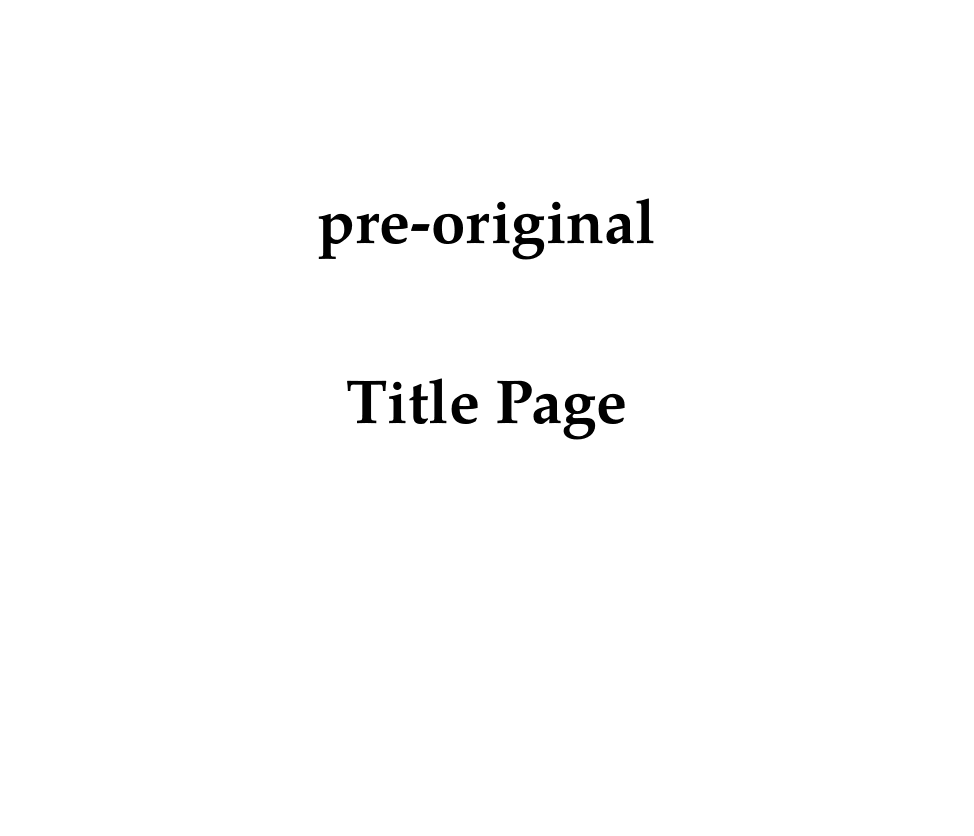
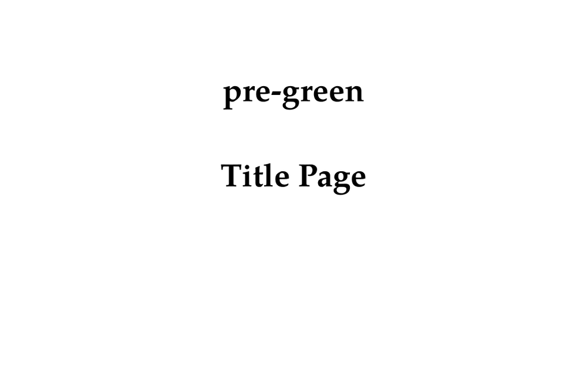
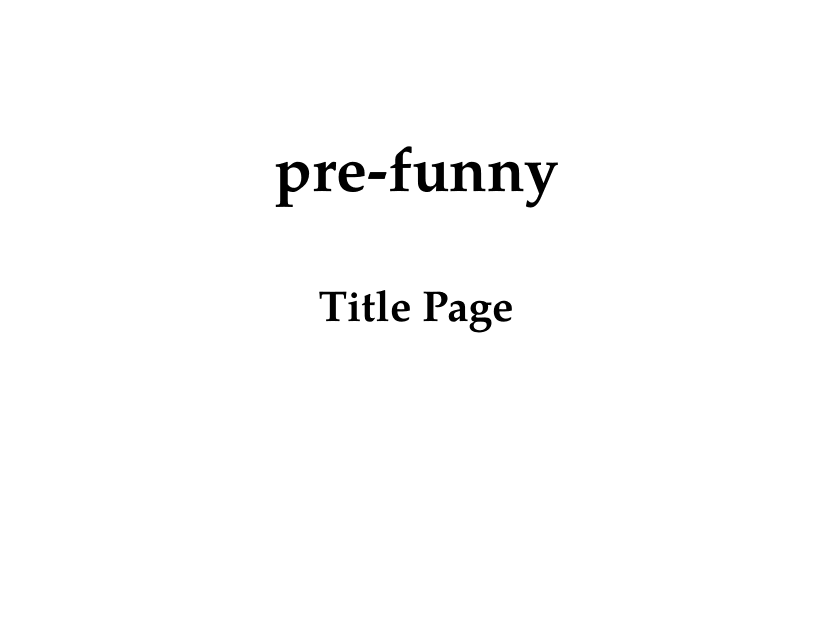
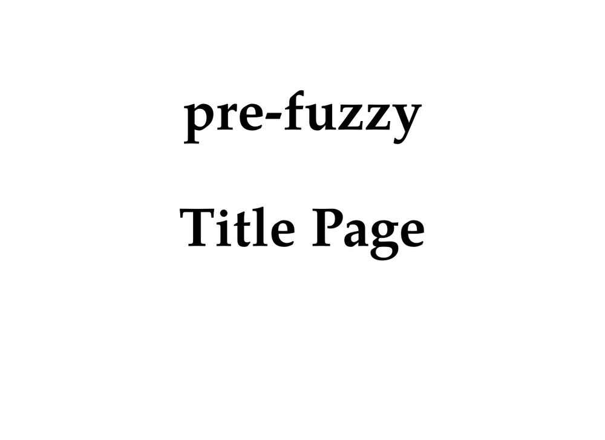
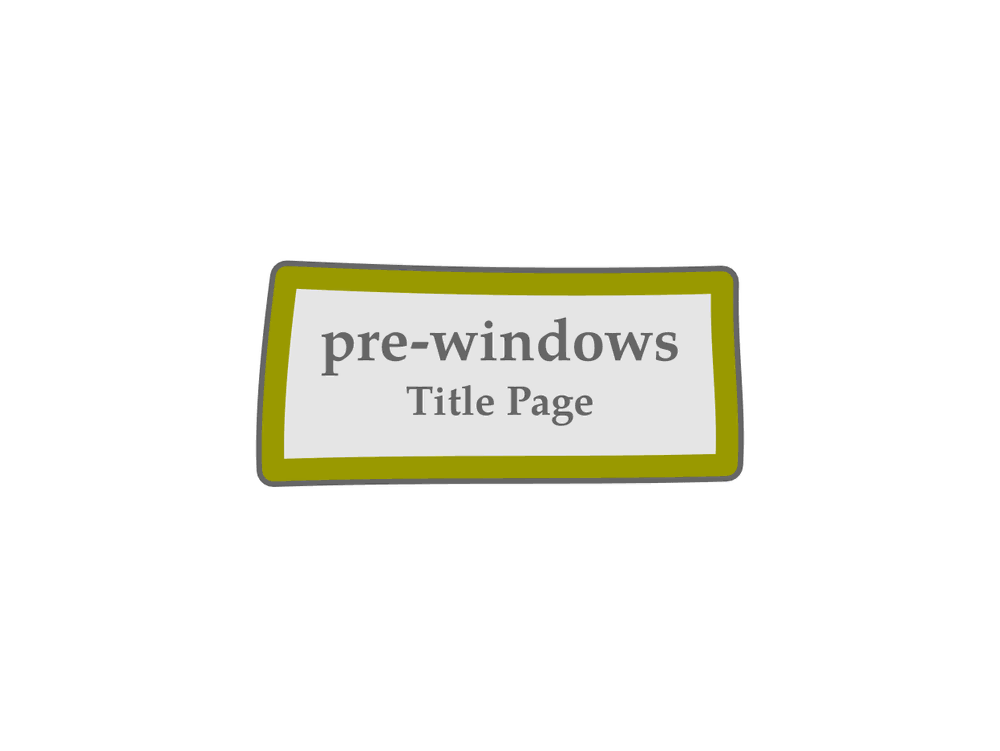
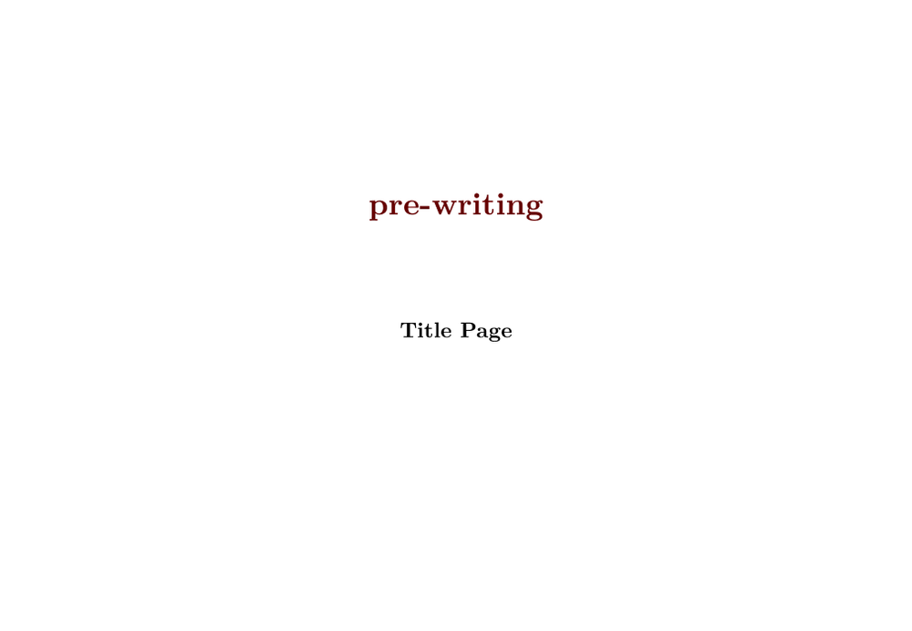
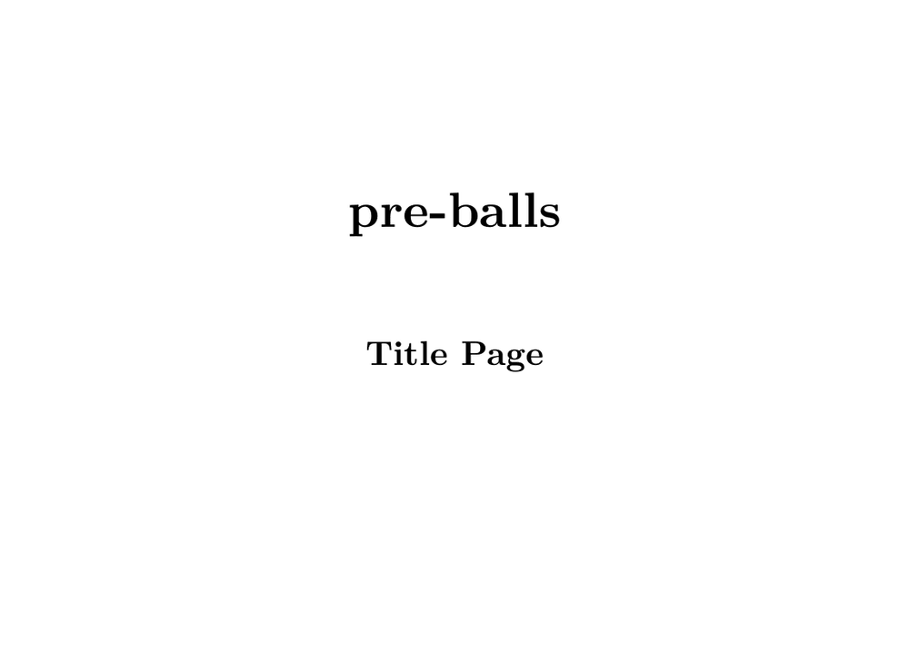

This is a list of existing presentation styles (made by Hans Hagen) shipped with ConTeXt. There will also be a list of predefined commands specific to single styles.
| TODO: page in progress - feel free to contribute
Things that have to come here: links to sources, links to PDF documents with sources explained, links to a couple of documents which use this style, title page, inner page, specific commands, how to change color of buttons & background, ... (See: To-Do List) |
- Article by Hans about presentation styles
- Article by Thomas on how to create your own presentation style
- If you don't know the name of a specific style, take a look into cont-fil.tex .
- to test a style, execute
texexec --pdf --mode=demo s-pre-xx
where xx is replaced with appropriate number. Do not not use s-pre-00 and
s-pre-60 as these are only environments defining helper commands used in other styles.
Contents
- 1 01. original
- 2 02. green
- 3 03. funny
- 4 04. colorful
- 5 05. fuzzy
- 6 06. polish
- 7 07. spider
- 8 08. wonder
- 9 09. windows
- 10 10. grow
- 11 11. stack
- 12 12. arrows
- 13 13. writing
- 14 14. split
- 15 15. balls
- 16 16. knot
- 17 17. weird
- 18 18. shade
- 19 19. organic
- 20 20. speckle
- 21 21. zoom
- 22 22. cycle
- 23 23. super
- 24 24. - 28.
- 25 50.
- 26 61. stepper
01. original
- Source: s-pre-01.tex
- Source explained: s-pre-01.pdf
\usemodule[pre-original] \TitlePage {pre-original\\Title Page}
- 
02. green
- Source: s-pre-02.tex
- Source explained: s-pre-02.pdf
\usemodule[pre-green] \TitlePage {pre-green\\Title Page}
- 
03. funny
- Source: s-pre-03.tex
- Source explained: s-pre-03.pdf
\usemodule[pre-funny] \TitlePage {pre-funny\\Title Page}
- 
04. colorful
- Source: s-pre-04.tex
- Source explained: s-pre-04.pdf
05. fuzzy
- Source: s-pre-05.tex
- Source explained: s-pre-05.pdf
\usemodule[pre-fuzzy] \setuplayout[location=middle,scale=.2] \TitlePage {pre-fuzzy\\Title Page}
- 
06. polish
- Source: s-pre-06.tex
- Source explained: s-pre-06.pdf
07. spider
- Source: s-pre-07.tex
- Source explained: s-pre-07.pdf
\usemodule[pre-spider] \TitlePage {pre-spider\\Title Page}
08. wonder
- Source: s-pre-08.tex
- Source explained: s-pre-08.pdf
09. windows
- Source: s-pre-09.tex
- Source explained: s-pre-09.pdf
\usemodule[pre-windows] \TitlePage {pre-windows\\Title Page}
- 
10. grow
- Source: s-pre-10.tex
- Source explained: s-pre-10.pdf
11. stack
- Source: Not available.
- Source explained: s-pre-11.pdf
12. arrows
- Source: Not available.
- Source explained: s-pre-12.pdf
13. writing
- Source: s-pre-13.tex
- Source explained: s-pre-13.pdf
\usemodule[pre-writing] \TitlePage {pre-writing\\Title Page}
- 
14. split
- Source: s-pre-14.tex
- Source explained: s-pre-14.pdf
15. balls
- Source: s-pre-15.tex
- Source explained: s-pre-15.pdf
\usemodule[pre-balls] \setuplayout[location=middle,scale=.2] \TitlePage {pre-balls\\Title Page}
- 
16. knot
- Source: s-pre-16.tex
- Source explained: s-pre-16.pdf
17. weird
- Source: Not available.
- Source explained: s-pre-17.pdf
18. shade
- Source: Not available.
- Source explained: s-pre-18.pdf
19. organic
- Source: s-pre-19.tex
- Source explained: s-pre-19.pdf
\usemodule[pre-organic] \setuplayout[location=middle,scale=.2] \TitlePage {pre-organic\\Title Page}
20. speckle
- Source: Not available.
- Source explained: s-pre-20.pdf
21. zoom
- Source: Not available.
- Source explained: s-pre-21.pdf
22. cycle
- Source: s-pre-22.tex
- Source explained: s-pre-22.pdf
\usemodule[pre-cycle] \TitlePage {pre-cycle\\ Title Page}
23. super
- Source: s-pre-23.tex
- Source explained: s-pre-23.pdf
\usemodule[pre-super] \setuplayout[location=middle,scale=.2] \TitlePage {pre-super\\ Title Page}
24. - 28.
s-pre-24.pdf s-pre-25.pdf s-pre-26.pdf s-pre-27.pdf s-pre-28.pdf
50.
- Source: s-pre-50.tex
Cited from the documentation:
When my mailbox started to overflow with messages about problems with the presentation step mechanism, I looked up old presentaton, hacked a bit and cooked up an alternative that is less dependent on PDF trickery.
Consider it a cheap trick and prelude to a couple of new presentation styles. (At the time of writing this, I still have some 10 of those styles to clean up and document.) You can give it a try:
61. stepper
- Source: s-pre-61.tex